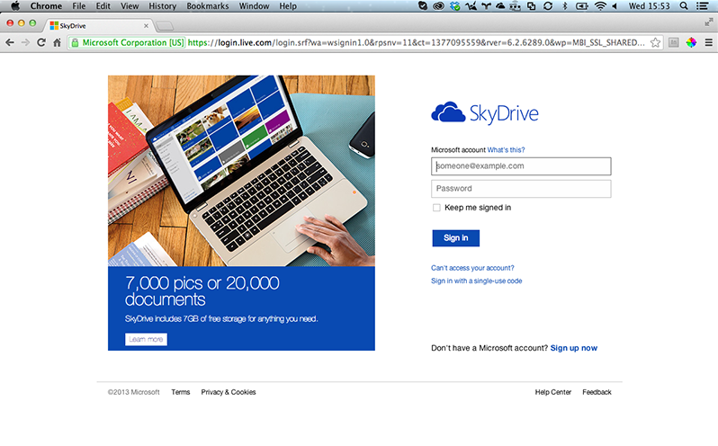

SkyDrive
Store & Share

What is SkyDrive?
Sky Drive allows you to store your files and media online and allows you to access these via online tools or applications installed on your computer or mobile device. You also have access to an online version of the office suit.
First Steps
- Go to SkyDrive.
- login with your Abertay email credentials.
Features
- Access documents from anywhere.
- Keep track of versions in one place.
- Work online with anyone.
- Access to online versions of MS Office suite.
How to share
- Right click on the file or folder you wish to share and select sharing.
- Either select to send it via email, share on a social network or generate a link.
- Check the boxes if you wish to allow the files to be edited, or if people need to sign in.